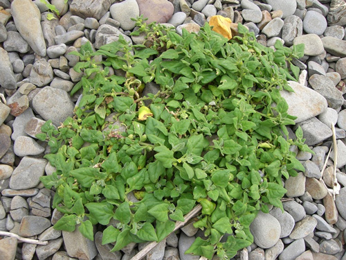

海岸のデコレーション
海岸には砂や貝殻しかないように思ってしまいますが、よく見ると草花も生えていることがわかります。ただし、海水や潮風、強い日差しなどの影響で、大きく育つものは見当たりません。その多くは小さく、地を這って伸びています。

こうした植物は「海浜植物」と呼ばれ、砂をかぶって埋もれても、茎が伸びてまた葉を出す仕組みになっています。
ところどころに顔を出す緑色の小さな葉っぱは、海岸をかわいくデコレーションしてくれます。海への道中で踏んづけてしまう前に、足元にあるものを観察してみるのもおもしろいですよ。